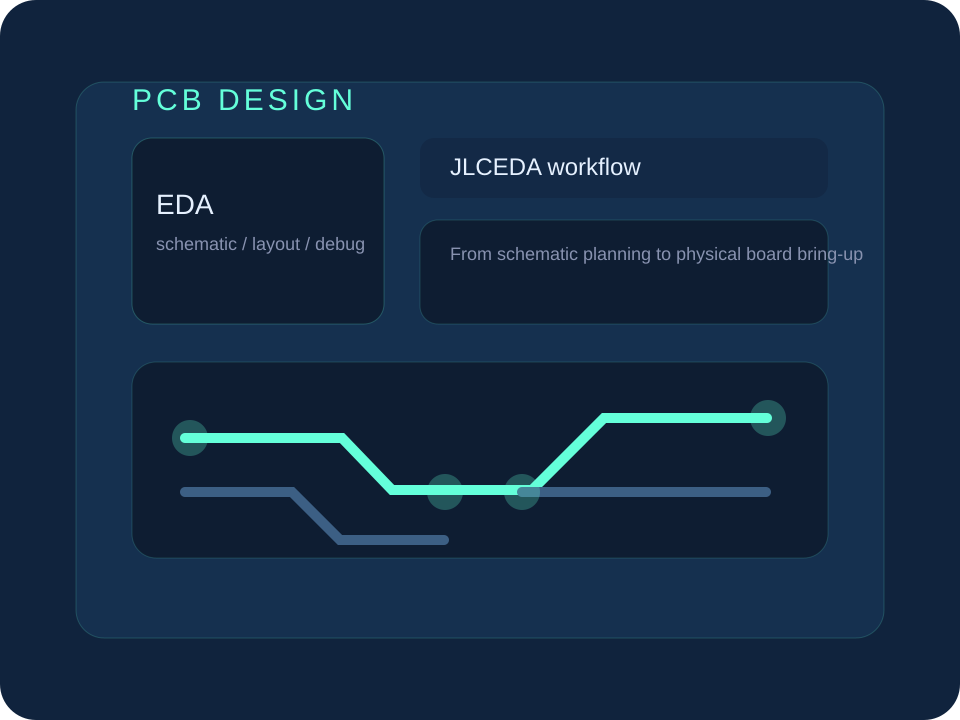

Professional Focus
姓名与专业
刘明金，专业是物联网应用技术。当前重点放在嵌入式系统、端侧 AI、Android 客户端维护、微信小程序与 PCB 设计落地实践。
Overview
先看清楚方向、技能和工具栈，再进入项目细节，这样阅读路径会更接近真实开发者个人网站。
Professional Focus
刘明金，专业是物联网应用技术。当前重点放在嵌入式系统、端侧 AI、Android 客户端维护、微信小程序与 PCB 设计落地实践。
Core Skills
嵌入式与硬件：熟悉 CH32 系列（V307/H417）及 STM32F407 芯片开发，掌握 FreeRTOS、RT-Thread，具备原理图和 PCB 布局布线能力。
端侧 AI 与视觉：熟练掌握 YOLO11 全生命周期训练，熟练使用 Roboflow 进行数据清洗和标注，并具备推理加速与准确率调优经验。
应用与全栈：熟悉 Android（Java）客户端开发，熟悉微信小程序原生开发及云服务器独立部署。
物联网通信：熟悉 Wi-Fi、Zigbee 以及复杂异构网络通信链路的搭建与维护。
Certificates
大学英语四级（CET-4）
全国计算机等级考试一级
AI Toolkit
模型工具：GPT、Gemini、Claude、通义、DeepSeek、GLM、Kimi、MiniMax。
开发提效：AI 编程、Bug 修复、Agent、Dify。
工作提效：文档撰写、方案整理、PPT 制作、资料检索。
Featured Projects
首页整块可点，先看懂项目是什么，再点进长页面查看图片、视频和具体分支内容。
Embedded / Competition
江苏省职业院校技能大赛项目，基于 CH32H417QEU6 与 RT-Thread 完成底层驱动、多任务调度和整机联调。
你会看到：系统方案设计、任务拆解、多外设驱动联调与稳定性优化过程
进入项目详情
AI / Android
结合 YOLO11 视觉识别、Android 客户端维护和跨节点通信的智能小车平台项目。
你会看到：模型训练、移动端重构、视频流解析和多车协同链路
进入项目详情
Hardware / PCB
围绕开发板、拓展坞与项目验证需求，独立完成原理图设计、PCB 布局布线、打样落地与焊接调试。
你会看到：从设计文件到实物板卡，再到上电验证和可复用平台搭建
进入项目详情
Mini App / Product
一个围绕情绪共振星图、认知重塑和自然语言交互设计的微信小程序项目。
你会看到：交互机制设计、模型接入、云部署和完整小程序实现链路
进入项目详情
About
我更喜欢做能真正落地的项目，也愿意把项目讲清楚。 在嵌入式、端侧 AI、Android、小程序和硬件设计之间，我一直在找把技术实现、产品表达和实际体验连接起来的方式。
希望寻找能让我继续做真实项目、继续积累工程能力和表达能力的实习、校招或合作机会，也期待参与更多嵌入式、AI 与终端交互结合的项目。
Contact
如果你想继续聊项目、实习机会或合作，可以直接从这里联系我。